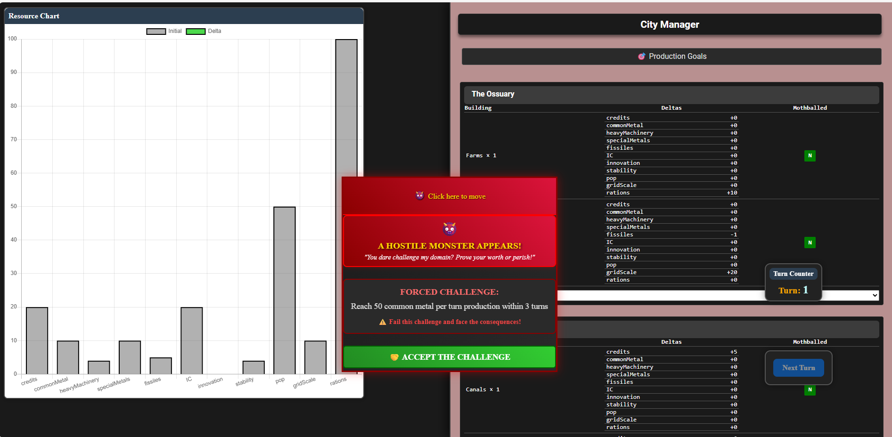
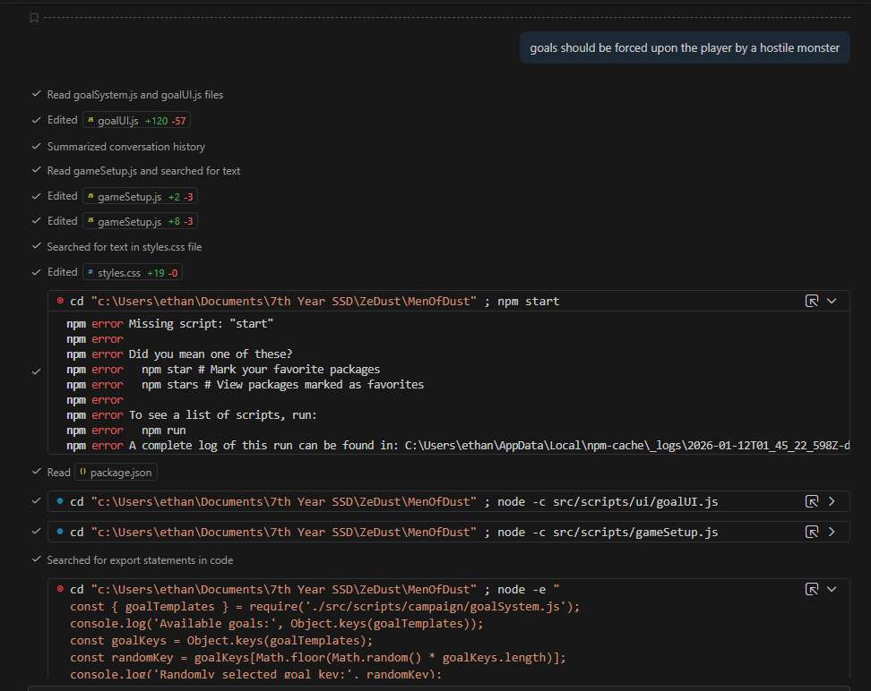

DOCTORS HATE THIS PLACEHOLDER ARTICLE TITLE
Click to read more!

My first impression of IDE-integrated LLMs is that they kept on going, far more invasively than I expected or wanted. In fact, it's trying to write this article for me right this moment, because the project environment I am currently in has not yet been configured to order it to stay silent. Let me give you the broader context.

This is my child. Like my father before me, I view my offspring with a mixture of revulsion and contempt, and I plead for it to perform as I wish it to. Briefly speaking, "Men of Dust" is a webapp game I wrote for my first BCIT webdev course, with mechanics centered around managing various resource flows as represented by the graph to the left. More relevantly, the UI is an AIslop abomination I was confessed to relying upon LLMs to get working in time for the deadline.

They say that HP Lovecraft hated and feared the air conditioner, despite how useful and apparently benign it was. And so I hate and fear the machine. With only a few seconds of effort involved from my meat-self, Github Copilot took an extremely vague suggestion of having resource-goal management presented as being forced upon the player by a monster to create a decent-looking UI popup. As I write this, Github Copilot is helpfully suggesting that I describe ways to resist the AI takeover of humanity or the encroachment of AI into personal project and the demolition of the human soul, but my concerns are much more prosaic.
The UI looks acceptable, even decent - in the several hundreds of lines it changed, it also broke a Production Goals showGoalSelection function, froze all panels on the right so they do not scroll like the rest, and possibly broke several other things along the way. I would hypothesize for an app this immature and with my current limited skills, it is probably faster and more efficient on net to have the LLM move fast and break things and then for my human self to clean up the broken features afterwards. At some crossover point of maturity, I would guess that it would become more efficient to ask the LLMs for advice and code snippets and then implement them by hand, and then to ask human beings once complexity exceeds the point of AI training.
Guessing at the crossover points for the efficient use of LLMs is, I suspect, an exercise in estimating the costs of technical debt. I was profoundly impressed by the speed at which the LLM generated functional features, but also dismayed at the carelessness with which it broke features at random. This is a human skills issue at least as much as it is a technical one - in one small scale study with sixteen experienced programmers conducted in early 2025, the developers believed that AI use had increased their task performance speed by 20%, when the AI-using developers in question had actually completed tasks about 20% slower than the participants forbidden from using AI. Of course, the study authors themselves note the limitations of their small sample size and other factors that might explain the slowdown. The participants in this study were experienced developers working on open-source codebases they had multiple years of familiarity with - taking my "crossover point" hypothesis as true, it may be that these developers were already past the point of efficiency gains from LLM use, and that less experienced developers working on new codebases might see more significant speedups. That, however, is assuming that there is a crossover point at all. I am assuming that experienced developers have their time wasted by debugging code from their inferiors, better spent writing it based on their own knowledge. However, that assumes that junior developers are producing a tolerable product in a faster timeframe by using LLMs. For a sufficiently low definition of "acceptable," such as the non-critical function of a video game UI, I am willing to guess this is true. But I could be wrong - maybe letting the machine rip through my codebase and then fixing the mistakes afterwards slowed me down after all. The trouble with guessing the crossover point is that LLM generated code front-ends the impression of progress, giving the impression that the remaining work is "merely" cleanup. This might be good in a human factors way, in terms of improving morale and motivation, but we could be working in a desert of mirages that ultimately slow us down. Only further empiricial study will determine the extent to which LLMs speed up our work in practice.